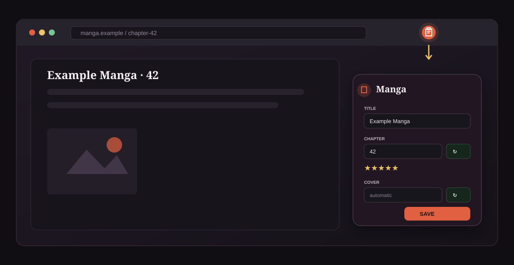
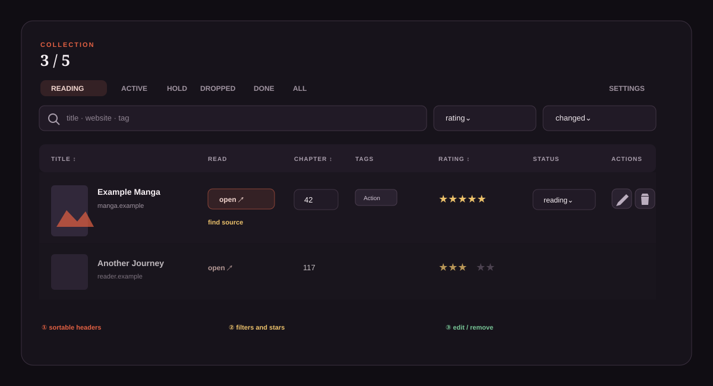
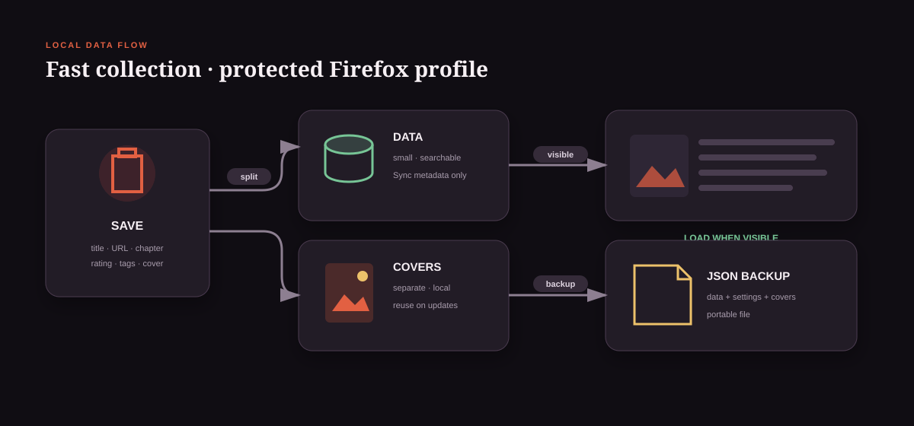
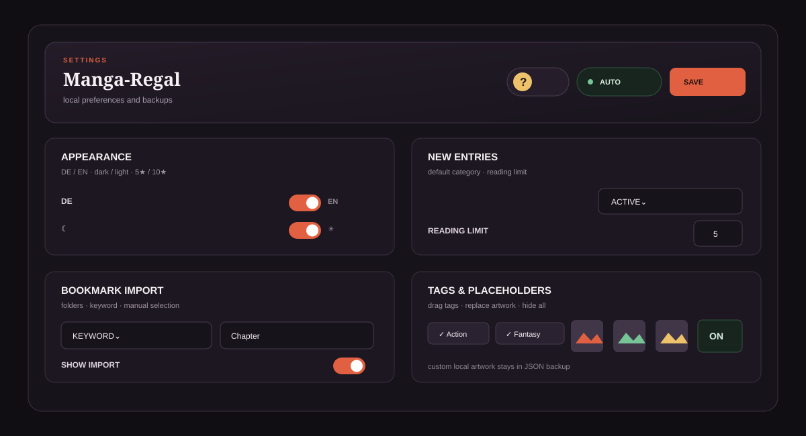

Chrome ab 148: Die Chrome-ZIP entpacken und den Ordner über chrome://extensions → Entwicklermodus → Entpackte Erweiterung laden auswählen. Tastenkürzel werden über chrome://extensions/shortcuts eingestellt. Die Sammlung funktioniert in beiden Browsern gleich; Firefox-Lesezeichen und Sync entsprechen im Chrome-Paket den Chrome-Lesezeichen und Chrome Sync. Die Dienste verbinden sich nicht miteinander; zum Wechsel JSON-Datensicherungen verwenden.
Dein Manga-Regal – Schritt für Schritt
Hier findest du alle Funktionen des Add-ons. Ohne aktivierten Firefox Sync bleiben Sammlung, Bewertungen, Tags und Cover vollständig im lokalen Firefox-Profil. Manga-Regal betreibt keinen eigenen Server.
Version 0.20.8: Diese Anleitung beschreibt die aktuelle Oberfläche einschließlich lokalisierter Hilfe, automatischer Kapitel- und Cover-Schalter sowie eigener Platzhalter-Cover.
Einen Manga aus dem aktuellen Tab speichern
Klicke oben rechts in Firefox auf das Manga-Regal-Symbol. Das Formular erscheint im aktuellen Webseiten-Tab. Im Formular öffnen das Symbol und der Titel „Im Manga-Regal speichern“ die Sammlung; auch der Knopf „Sammlung öffnen“ bleibt verfügbar.

Titel, Webseitenadresse, Beschreibung, aktuelles Kapitel und ein verfügbares Cover werden soweit möglich übernommen.
Du kannst Titel, Kapitel, Kategorie, Bewertung und Tags korrigieren oder ergänzen. Neue Installationen verwenden standardmäßig fünf Sterne; in den Einstellungen kannst du optional auf zehn Sterne wechseln.
Der kleine Schalter direkt hinter dem Kapitelfeld deaktiviert die automatische Erkennung nur für diesen Manga. Die Auswahl bleibt auch bei späteren Kapitelupdates erhalten; das Kapitel kann weiterhin manuell eingetragen werden.
Nach dem Speichern zeigt das Formular an, ob Manga und Cover lokal gespeichert wurden oder nur das Cover nicht geladen werden konnte.
Tipp: Ist das Symbol nur im Erweiterungsmenü zu sehen, öffne das Puzzleteil-Menü und hefte Manga-Regal an die Symbolleiste an.
Ein gelesenes Kapitel aktualisieren
Öffnest du ein weiteres Kapitel desselben Mangas und speicherst es, vergleicht Manga-Regal den Titel mit deinen vorhandenen Leseständen – nicht nur die aktuelle Quelladresse. Ein Dialog schlägt den passenden Stand vor, lässt dich das Ziel ändern oder einen verbundenen Re-Read neu anlegen.
- Bestehenden Eintrag aktualisieren: Adresse und Kapitelstand werden normalerweise ersetzt; Bewertung, Tags, Kategorie und vorhandenes Cover bleiben erhalten. Ist die Kapitel-Automatik für den Manga rot ausgeschaltet, wird nur der Weiterlesen-Link aktualisiert und das gespeicherte Kapitel bleibt unverändert. Eine anschließende manuelle Eingabe bleibt möglich.
- Hauptstand oder Re-Read: Liegt das neue Kapitel unter oder auf dem Hauptstand, wird ein vorhandener Re-Read vorgeschlagen. Liegt es darüber, wird der Hauptstand vorgeschlagen. Über das Dropdown kannst du die Auswahl vor dem Speichern jederzeit korrigieren. Die Zuordnung bleibt auch erhalten, wenn die Website ihre URL ändert.
- Als Re-Read neu anlegen: Erstellt einen getrennten Lesestand und verbindet ihn intern mit dem Hauptstand. Optional erhält er automatisch den grünen Tag „Re-Read“.
- Separat speichern: Erstellt bewusst einen zweiten Eintrag.
- Cover: Bei einem Kapitelupdate wird es nur nachgeladen, wenn für den Eintrag noch kein lokales Cover vorhanden ist.
Die Sammlung bedienen

Weiterlesen
Öffnet den gespeicherten Kapitel-Link. Darunter sucht „Neue Quelle suchen“ nach Titel und Kapitel, falls eine Manga-Seite geschlossen wurde.
Filtern & sortieren
Suche nach Titel, Website oder Tag. Filtere nach jedem Wert deiner 5- oder 10-Sterne-Skala. Ein Klick auf einen Spaltenkopf sortiert Texte alphabetisch und Werte zuerst absteigend.
Direkt bearbeiten
Kapitel, Sterne, Tags und Status lassen sich in der Übersicht ändern. Der Stift öffnet den ganzen Eintrag, der Papierkorb entfernt ihn nach Bestätigung.
Tabelle oder Kacheln
Für jede Kategorie kann in den Einstellungen eine eigene Ansicht gewählt werden. Cover in Tabellen lassen sich zusätzlich ausblenden.
Kategorien, eigene Namen und Leselimit
Standardmäßig gibt es Lese ich gerade, Aktiv, On Hold, Gedroppt, Abgeschlossen und Alle. In den Einstellungen kannst du ihre sichtbaren Namen ändern und weitere Kategorien anlegen.
„Lese ich gerade“
Dieser Bereich ist für die Titel gedacht, die du im Moment wirklich liest. Die Belegung wird als beispielsweise 3/5 angezeigt. Ist das einstellbare Limit erreicht, muss zuerst ein Titel in eine andere Kategorie verschoben werden.
Standard für neue Manga
Lege fest, in welcher Kategorie neue Einträge aus dem Tab-Formular, dem manuellen Formular und dem Lesezeichenimport landen.
Firefox-Lesezeichen importieren und wieder erstellen
Der Import übernimmt die von Firefox bereitgestellten Lesezeichendaten. Ist die Kapitel-Link-Erkennung eingeschaltet, werden passende Kapitelstände aus der Adresse ergänzt; andernfalls bleibt das Feld offen und kann optional manuell gepflegt werden.
Importiere nur markierte Ordner. Pro Ordner kann direkt eine gemeinsame Bewertung vergeben werden.
Importiere alle Lesezeichen, deren Titel oder Adresse zum Beispiel „Chapter“ enthält.
Wähle einzelne Lesezeichen aus allen Firefox-Ordnern aus.
Der Importknopf im Kopfbereich kann in den Einstellungen vollständig ausgeblendet werden.
Zurück zu Firefox: In den Einstellungen kannst du die komplette Sammlung als Oberordner „Manga-Regal“ mit Unterordnern je Kategorie wieder in Firefox anlegen. Das gilt auch für Manga, die nie aus einem Firefox-Lesezeichen importiert wurden. Dabei werden nur Titel und aktuelle Adresse übernommen.
Wie Cover lokal gespeichert und geladen werden

- Beim ersten Speichern lädt das Add-on das gefundene Cover herunter und legt es getrennt vom Hauptdatensatz im lokalen Erweiterungsspeicher ab.
- In der Sammlung werden Bilder erst geladen, wenn ihre Zeile oder Kachel in den sichtbaren Bereich kommt. So werden nicht alle Cover gleichzeitig aufgebaut.
- Bei einem normalen Kapitelupdate bleibt das vorhandene Cover unverändert. Mit dem kleinen Automatikknopf hinter der Cover-Adresse lässt sich die automatische Cover-Erkennung für diesen Manga dauerhaft abschalten.
- Fehlt ein eigenes Cover, zeigt Manga-Regal eines von vier lokalen Motiven. Der verwendete Platzhalter wird automatisch nach Tags gewählt oder kann in der Tag-Vorauswahl per Drag-and-drop fest zugeordnet werden.
- In der Tag-Vorauswahl kannst du jedes der vier Motive durch ein eigenes JPG-, PNG- oder WebP-Bild ersetzen. Der Schalter „Platzhalter-Cover anzeigen“ blendet alle Ersatzbilder aus, ohne Bilder oder Zuordnungen zu löschen.
- Auf Cloudflare-geschützten Seiten versucht Manga-Regal, das aktuell sichtbare Bild aus dem geöffneten Tab zu übernehmen. Cookies werden dabei nicht gelesen, gespeichert oder synchronisiert. Die Cover liegen geschützt im Firefox-Profil; der JSON-Export nimmt sie in die Sicherung auf.
Die Einstellungen

Darstellung
Dunkel/Hell und Deutsch/Englisch werden per Schalter gewählt. Die Tabellen- oder Kachelansicht ist für jede Kategorie einzeln einstellbar. Tabellen-Cover sind bei einer neuen Installation eingeschaltet.
Tags
Aktiviere häufige Tags, erstelle eigene Vorgaben oder entferne falsch geschriebene Tags aus der Vorauswahl. Bereits vergebene Manga-Tags bleiben dabei erhalten.
Suchmaschine
Nutze die Firefox-Standardsuche, eine installierte Suchmaschine, eine der Vorgaben oder eine eigene Adresse mit {query} als Platzhalter.
Erster Start
Nach einer Neuinstallation öffnet sich einmalig ein kurzer Startdialog mit den drei wichtigsten Schritten und einem Link zu dieser Anleitung.
Kategorien & Sterne
Ändere Name, Tabellen-/Kachelansicht und Reihenfolge gemeinsam in einem Kategorien-Editor. Ziehe eine Zeile am Griff oder nutze die Pfeile. Beim Wechsel von zehn auf fünf Sterne warnt ein Bestätigungsdialog, wenn höhere Bewertungen vorhanden sind. Nach der Bestätigung werden nur Werte über fünf auf fünf gesetzt; Werte von eins bis fünf bleiben unverändert.
Tastenkürzel
Firefox verlangt Strg oder Alt als Haupttaste; Umschalt darf hinzukommen. Ist ein Kürzel belegt, wähle eine andere Kombination.
Speichern: Einzelne Änderungen werden automatisch gesichert. Der zusätzliche Knopf „Einstellungen speichern“ übernimmt alle sichtbaren Einstellungsfelder noch einmal gemeinsam.
Sammlung mit Firefox Sync übertragen
Unter Einstellungen → Firefox Sync kannst du die Synchronisierung einschalten, sofort ausführen oder einen vorhandenen Sync-Stand laden. Dafür muss Firefox mit deinem Mozilla-Konto angemeldet und die Add-on-Synchronisierung aktiviert sein. Beim ersten Einschalten zeigt Firefox seinen eigenen Dialog für die optionalen Datenberechtigungen. Ohne Zustimmung bleibt Sync ausgeschaltet.
Was synchronisiert wird
Titel, Adresse, Kapitel, Bewertung, Tags, Kategorie sowie die Einstellungen werden als gemeinsamer Snapshot mit gzip komprimiert. Diese komprimierte Sync-Kopie bleibt lokal vorbereitet und wird nach Änderungen im Hintergrund erneuert. Beim Synchronisieren muss sie dann nur noch in größenbegrenzten Transportstücken hochgeladen werden.
Was lokal bleibt
Cover, Favicons, Protokolle, Firefox-Lesezeichen-IDs und Ordnerpfade werden nicht synchronisiert. Beim Laden eines Sync-Stands bleiben bereits vorhandene lokale Cover passender Manga erhalten.
Speichergrenze: Firefox stellt einer Erweiterung ungefähr 100 KB Sync-Speicher zur Verfügung. Die Einstellungen zeigen Manga-Anzahl, Transportstücke, belegten Speicher und Kompressionsfaktor. Für eine vollständige Sicherung inklusive Cover bleibt der JSON-Export vorgesehen.
Datensicherung und Protokoll
JSON-Sicherung
„JSON-Sicherung herunterladen“ speichert Sammlung, Einstellungen, Protokolle und lokale Cover in einer Datei. Über „JSON-Sicherung importieren“ stellst du diese Daten wieder her.
Import- & Fehlerprotokoll
Das lokale Protokoll zeigt Importe, Warnungen und Fehler. Es kann nach Stufe und Text gefiltert oder vollständig geleert werden.
Wichtig: Erstelle vor dem Entfernen des Add-ons eine JSON-Sicherung. Firefox löscht beim Deinstallieren normalerweise auch den lokalen Erweiterungsspeicher.
Häufige Probleme lösen
Ein Cover wird nicht angezeigt
Öffne den Manga über den Stift und prüfe die Cover-Adresse. Manche Webseiten oder Cloudflare blockieren direkte Erweiterungsanfragen. Speichere eine andere direkte Bildadresse oder öffne die Manga-Seite zuerst im aktiven Tab, damit das sichtbare Bild übernommen werden kann. Ohne eigenes Bild kannst du Platzhalter-Cover aktivieren.
Das Symbol oder das Pop-up fehlt
Öffne about:debugging#/runtime/this-firefox und klicke bei Manga-Regal auf „Neu laden“. Ist das Symbol nur im Erweiterungsmenü zu sehen, hefte es über das Puzzleteil-Menü an. Bei internen Firefox-Seiten öffnet der Toolbar-Klick stattdessen die Sammlung.
Das Tastenkürzel lässt sich nicht speichern
Verwende Strg oder Alt plus eine weitere Taste, zum Beispiel Alt + Umschalt + M. Reines „Umschalt + D“ ist in Firefox nicht gültig. Bei „bereits belegt“ muss eine andere Kombination gewählt werden.
„Lese ich gerade“ nimmt keinen weiteren Manga an
Das angezeigte Limit ist erreicht. Verschiebe einen Manga nach Aktiv, On Hold, Gedroppt oder Abgeschlossen – oder erhöhe das Limit in den Einstellungen.
„Weiterlesen“ führt zu einer geschlossenen Seite
Klicke direkt darunter auf „Neue Quelle suchen“. Manga-Regal öffnet eine Suche mit Titel und gespeichertem Kapitel.
Wo sind meine Daten unter Windows?
Sie liegen im lokalen Firefox-Profil im Erweiterungsspeicher. Verwende die JSON-Sicherung, wenn du eine normale, transportierbare Datei auf Windows ablegen möchtest.